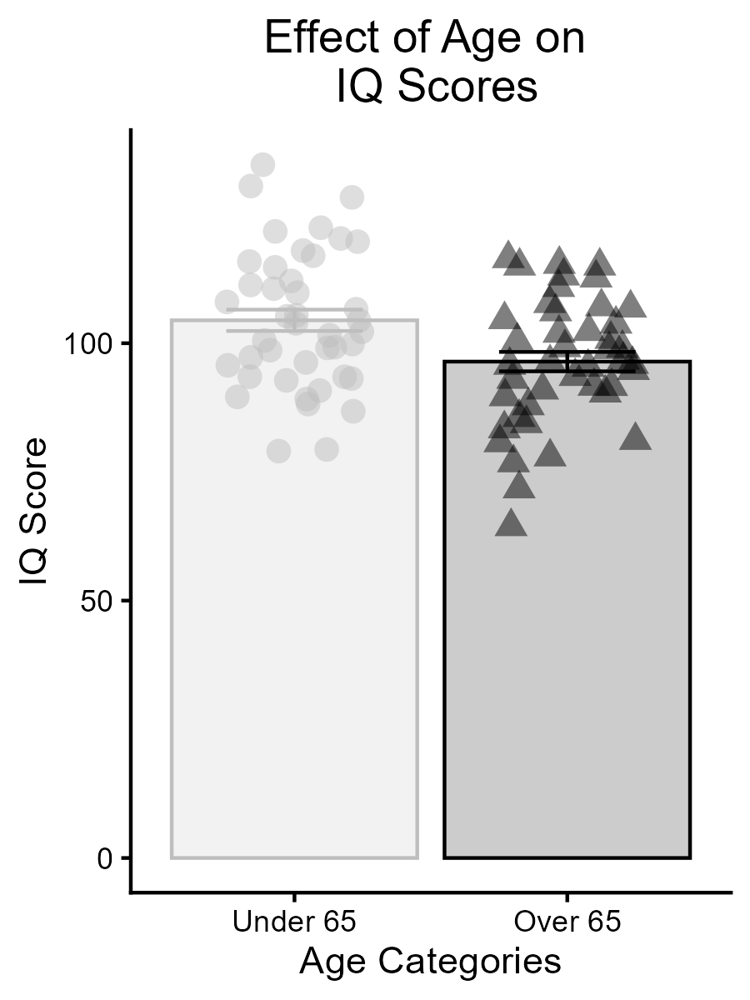
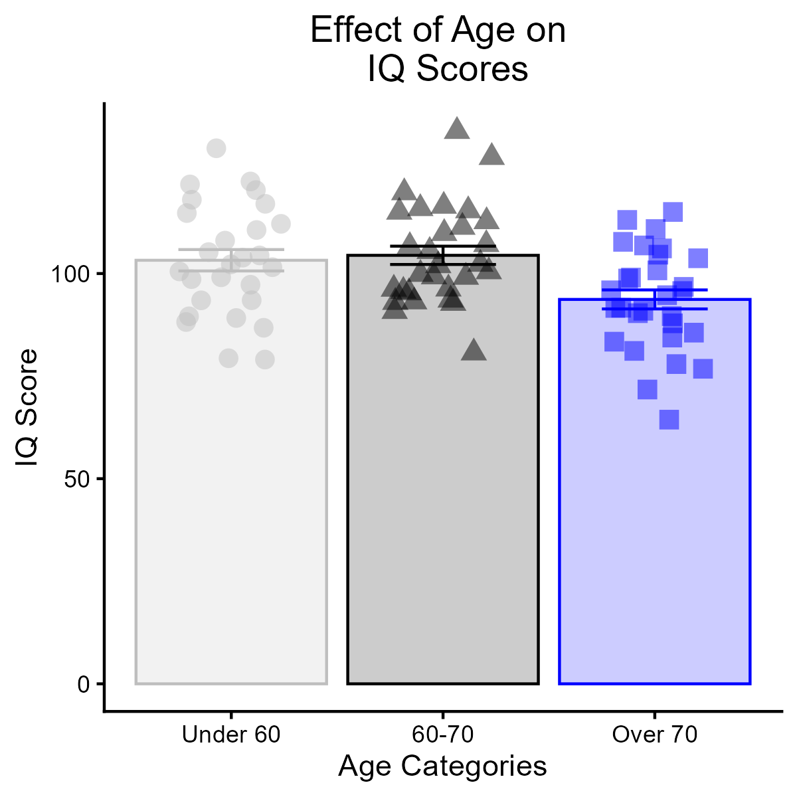

Strength of association is a necessary step in determining whether there is a causal relationship between X and Y, but it is not sufficient for inferring causality. For your final assignment, you will be designing an experiment that involves at least 2 independent variables (The “IV” and the “covariate” that you have explored in the previous assignments).
In prior assignments, you were already asked to provide a simple group comparison or manipulation (an IV) that could reveal a difference in your DV. Now, please write a paragraph explaining this decision in more detail - what is the theory or explanation for why this manipulation works?
2. What is already known?
The second step is getting back into literature review. Write a paragraph or two in APA format describing what we know about your proposed manipulation and DV. What in the research literature (citing 2-3 papers) makes you believe that this manipulation will influence your DV? What direction is the proposed effect, i.e., does the manipulation increase or decrease your DV.
Most importantly, we need to get specific about the expected change in the DV when you manipulate the IV. In your brief literature review, please report any measure of effect size, which will often be a cohen’s d or partial eta-squared (η2) or beta estimate (b). Best of all would be to see how much of a change in the DV in units of the DV the manipulation makes.
3. Connect the theory of the IV-DV relationship to your proposed covariate.
Explain how the continuous covariate might modulate the relationship between the IV and DV that you are proposing. Use literature to support your ideas. Be very clear about the proposed direction of the effects. Would you expect the IV to affect all levels of the covariate equally? Why or why not?
Reference at least one article that suggests a relationship between your independent variable and proposed covariate to support your narrative.
4. Transform the continuous covariate to a categorical variable
Using the r-code that you developed in practical 4, have a look at your continuous covariate and continuous DV. Imagine that this continuous relationship represents the real-world construct. If you were to divide this continuum into categories, how many would you use and why? Explain why it might make sense to use this number of categories (either from a statistical or a theoretical perspective).
Back to the code! Using the data that you simulated in practical 4, transform the continuous covariate into a new column that is categorical. Use ggplot to make a bar chart with error bars that represent the standard error of the mean and individual points to represent your theoretical participants’ scores on the DV. Use the method that we learned in practical 4 to save off a high quality .png image of this chart, then call it back using knitr::kable().
Compute a statistical analysis to measure whether the categories that you selected differ significantly from one another on your DV. This analysis should either be a two-sample t-test or a one-way ANOVA (depending on the number of categories you chose). Interpret the analysis using an APA statement.
Make sure that you have echo = TURE, warning = FALSE, message = FALSE set for your code blocks so that R will print out your code and the results, but will hide messages and warnings.
5. Reflect
What are the advantageous and disadvantages to transforming the continuous covariate into a categorical variable? Was it difficult to choose the number of categories to divide your covariate into? What did you think about generating a bar chart through ggplot? How did running your first statistical analysis through R go? Is there anything that would have helped you learn these processes more effectively? Any lingering questions?
Code for Practical #5
# Set up how the code chunks will printknitr::opts_chunk$set(echo =TRUE, # Show the codewarning =FALSE, # Hide the warningsmessage =FALSE) # Hide the messageslibrary(faux)
Warning: package 'faux' was built under R version 4.4.3
************
Welcome to faux. For support and examples visit:
https://scienceverse.github.io/faux/
- Get and set global package options with: faux_options()
************
library(tidyverse)
Warning: package 'tidyverse' was built under R version 4.4.3
Warning: package 'ggplot2' was built under R version 4.4.3
Warning: package 'stringr' was built under R version 4.4.3
Warning: package 'forcats' was built under R version 4.4.3
Warning: package 'lubridate' was built under R version 4.4.3
── Conflicts ────────────────────────────────────────── tidyverse_conflicts() ──
✖ dplyr::filter() masks stats::filter()
✖ dplyr::lag() masks stats::lag()
ℹ Use the conflicted package (<http://conflicted.r-lib.org/>) to force all conflicts to become errors
Generate data
The block of code below is the same as what was computed in practical #4. Here, the theory is to generate two columns of data of a given n (i.e., number of rows) with an approximate correlation between the columns specified. The two columns should represent your chosen covariate and dependent variable.
# Set a consistent start point for "random" data generation# Makes it so the output will be consistentset.seed(123) # Can be any value. # Generate data. Specify the number of rows, number of variables, means for the columns, sd's for the columns, and the correlation between the columns.data <-rnorm_multi(n =85, vars =2, mu =c(65,100), sd =c(10,15), r =-0.3)# Rename the columns to represent your variables colnames(data) <-c("Age","IQ")###### Everything above this point is copy & pasted from practical #4.
Transform
Generate a 3rd column of data that will represent a categorized version of the covariate. Divite the participants into categories based on specified cut points.
# Transform the continuous variable into categoriesdata$age_cat <-cut(data$Age,breaks =c(-Inf, 65, Inf), # cut pointslabels =c("Under 65", "Over 65")) # labelshead(data) # Check out the data frame with the new column
Age IQ age_cat
1 64.74322 90.80306 Under 65
2 56.44198 93.49663 Under 65
3 53.76554 121.72313 Under 65
4 67.53304 101.96359 Over 65
5 54.27693 98.64371 Under 65
6 48.10980 122.44146 Under 65
Make a Bar Graph
# A bar grapha <- data %>%group_by(age_cat) %>%summarise(n=n(),mean=mean(IQ),sd=sd(IQ) ) %>%mutate(se=sd /sqrt(n)) %>%ggplot(aes(x=age_cat,y=mean, colour = age_cat, fill= age_cat, shape=age_cat)) +geom_bar(stat="identity",alpha=0.2)+geom_errorbar(aes(x=age_cat,ymin=mean-se,ymax=mean+se),width=0.5)+geom_jitter(data = data,aes(x=age_cat,y=IQ),height=0, width=0.25, size=3,alpha=0.5)+scale_colour_manual(values =c("grey","black"))+scale_fill_manual(values=c("grey","black"))+theme_classic()+theme(legend.position ="none")+theme(plot.title =element_text(hjust=0.5))+labs(x="Age Categories",y="IQ Score",title="Effect of Age on \n IQ Scores" )ggsave("2_bars.png",a,height=4,width=3,dpi=300)knitr::include_graphics("2_bars.png")

First example: Here, I divided the continuous covariate into two categories.
Analyze
Run a t-test because there are only two groups here.
# Levigne's test for equity of variancesvar.test(data = data, IQ ~ age_cat)
F test to compare two variances
data: IQ by age_cat
F = 1.1772, num df = 41, denom df = 42, p-value = 0.6007
alternative hypothesis: true ratio of variances is not equal to 1
95 percent confidence interval:
0.6359244 2.1842525
sample estimates:
ratio of variances
1.177203
# A t.test when variances are not unequalt.test(data = data, IQ ~ age_cat, var.equal =TRUE)
Two Sample t-test
data: IQ by age_cat
t = 2.8695, df = 83, p-value = 0.005214
alternative hypothesis: true difference in means between group Under 65 and group Over 65 is not equal to 0
95 percent confidence interval:
2.462339 13.586680
sample estimates:
mean in group Under 65 mean in group Over 65
104.45180 96.42729
3-category exmaple
# An example of how to divide the continuous variable into 3 categoriesdata$age_cat <-cut(data$Age,breaks =c(-Inf, 60, 70, Inf),labels =c("Under 60","60-70", "Over 70"))# Graph for the 3-category data ## Only change vs above is the number of coulours! (Robust!!)JLB_garph <- data %>%# Assign the chart to an objectgroup_by(age_cat) %>%summarise(n=n(),mean=mean(IQ),sd=sd(IQ) ) %>%mutate(se=sd /sqrt(n)) %>%ggplot(aes(x=age_cat,y=mean, colour = age_cat, fill= age_cat, shape=age_cat)) +geom_bar(stat="identity",alpha=0.2)+geom_errorbar(aes(x=age_cat,ymin=mean-se,ymax=mean+se),width=0.5)+geom_jitter(data = data,aes(x=age_cat,y=IQ),height=0, width=0.25, size=3,alpha=0.5)+scale_colour_manual(values =c("grey","black","blue"))+scale_fill_manual(values=c("grey","black","blue"))+theme_classic()+theme(legend.position ="none")+theme(plot.title =element_text(hjust=0.5))+labs(x="Age Categories",y="IQ Score",title="Effect of Age on \n IQ Scores" )# Save a high quality .png copy of the imageggsave("JLB_prc_5.png",JLB_garph,height=4,width=4,dpi=300)# Call back the high quality imageknitr::include_graphics("JLB_prc_5.png")

Analyze 3-category example
When there are more than two groups, use ANOVA instead of a t-test. If the results from the omnibus test of significance indicate p < 0.05, run Tukey’s honestly significant difference test to figure out where the group differences are.
# Run a one-way ANOVAres <-aov(data = data, IQ ~ age_cat)# Follow up to find out which groups differ from one-another. TukeyHSD(res)
Tukey multiple comparisons of means
95% family-wise confidence level
Fit: aov(formula = IQ ~ age_cat, data = data)
$age_cat
diff lwr upr p adj
60-70-Under 60 1.205088 -6.882959 9.293134 0.9327115
Over 70-Under 60 -9.545689 -17.633735 -1.457642 0.0165397
Over 70-60-70 -10.750776 -18.693080 -2.808472 0.0050015